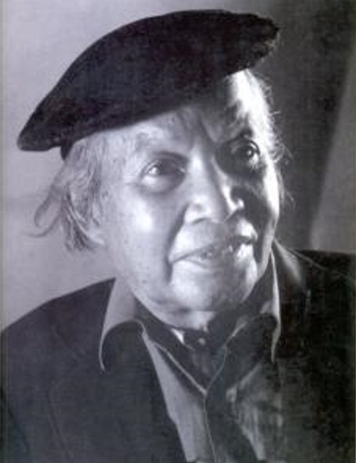

Sinh ngày 15 tháng10 năm Quý Sửu (1913) ở Hà Nội
Học: Trường Bảo hộ, trường Luật.
Dạy tư, quản lý Tinh hoa, chủ trương Revue pédagogique.
Hiện làm tham tá Thương chính Hà nội.
Đã đăng thơ: Phong hóa, Loa, Phụ nữ thời đàm, Tinh hoa

Có những nhà thơ không bao giờ có thể làm được một câu thơ - tôi muốn nói một câu đáng gọi là thơ. Những người ấy hẳn là những người đáng thương nhất trong thiên hạ. Sao người ta thương hại những kẻ bị tình phụ nuôi một giấc mộng ái ân không thành, mà không ai thương lấy những kẻ mang một mối tình thơ u uất chịu để tan tành giấc mộng quí nhất và lớn nhất ở đời; giấc mộng thơ?Hôm nay trong khi viết quyển sách này, một quyển sách họ sẽ xem như một sự mỉa mai đau đớn, thơ Vũ Đình Liên bỗng nhắc tôi nghĩ đến những con người xấu số kia.
Tôi có cần phải nói ngay rằng Vũ Đình Liên không phải một người xấu số? Trong làng thơ mới, Vũ Đình Liên là một người cũ. Từ khi phong trào thơ mới ra đời, ta thấy có thơ Vũ Đình Liên trên các báo. Người cũng ca tình yêu như hầu hết mọi nhà thơ hồi bấy giờ. Nhưng hai nguồn thi cảm chính của người là lòng thương người và tình hoài cổ. Người thương những kẻ thân tàn ma dại, người nhớ những cảnh cũ người xưa. Có một lần hai nguồn cảm hứng ấy đã gặp nhau và đã để lại cho chúng ta một bài thơ kiệt tác: Ông đồ. Ông đồ năm năm đến mùa hoa đào, lại ngồi viết thuê bên đường phố. "Ông chính là cái di tích tiều tụy đáng thương của một thời tàn" [1]. Ít khi có một bài thơ bình dị mà cảm động như vậy. Tôi tưởng như đọc lười sám hối của cả một bọn thanh niên chúng ta đối với lớp người đương đi về cõi chết. Đã lâu lắm chúng ta chỉ xúm nhau lại chế giễu họ quê mùa, mạt sát họ hủ lậu... Cái cảnh thương tâm của nền học Nho lúc mạt vận chúng ta vô tình như không lưu ý. Trong bọn họ, chúng ta vẫn có một hai người ca tụng đạo Nho và các nhà nho. Nhưng chế giễu mạt sát không nên, mà ca tụng cũng không được. Phần đông các nhà nho còn sót lại chỉ đáng thương. Không nghiên cứu, không lý luận, Vũ Đình Liên với một tấm lòng dễ cảm nhận ra sự thực ấy và gián tiếp chỉ cho ta cái thái độ hợp lý hơn cả đối với các bực phụ huynh của ta. Bài thơ của người có thể xem là một nghĩa cử.
Theo đuổi nghề văn mà làm được một bài thơ như thế cũng đủ. Nghĩa là đủ để lưu danh, đủ với người đời. Còn riêng đối với thi nhân thực chưa đủ. Tôi thấy Vũ Đình Liên còn bao nhiêu điều muốn nói, cần nói mà nghẹn nghào không nói được. "Tôi bao giờ - Lời Vũ Đình Liên - cũng có cái cảm tưởng là không đạt ý thơ của mình. Cũng vì không tin thơ tôi có một chút giá trị nên đã lâu tôi không làm thơ nữa" [2]. Vũ Đình Liên đã hạ mình quá đáng, chúng ta đều thấy. Nhưng chúng ta cũng thấy trong lời nói của người một nỗi đau lòng kín đáo. Người đau lòng thấy ý thơ không thoát được lời thơ như linh hồn bị giam giữ trong nhà tù xác thịt. Có phải vì thế mà hồi 1937, trước khi từ giã thi đàn, người đã gửi lại đôi vần thơ u uất:
Nặng mang mãi khối hình hài ô nhục.
Tâm hồn ta đã nhọc tự lâu rồi!
Bao nhiêu xanh thăm thẳm trên bầu trời;
Bao bóng tối trong lòng ta vẩn đục!
Nghĩ cũng tức! Từ hồi 1935 tả cảnh thu, Vũ Đình Liên viết:
Làn gió heo may xa hiu hắt,
Lạng lùng chẳng biết tiễn đưa ai!
Hai câu thơ cũng sạch sẽ, dễ thương. Nhưng làm sao người ta còn nhớ được Vũ Đình Liên khi người ta đã đọc, bốn năm sau mấy câu thơ Huy Cận cùng một tứ:
Ôi! nắng vàng sao nhớ nhung!
Có ai đàn lẻ tơ chùng?
Có ai tiễn biệt nơi xa ấy
Xui bước chân đây cũng ngại ngùng...
Cũng may những câu thơ hoài cổ của Huy Cận:
Bờ tre rung động trống chầu,
Tưởng chừng còn vọng trên lầu ải quan
Đêm mơ lay ánh trăng tàn,
Hồn xưa gửi tiếng thời gian, trống dồn.
Những câu thơ tình nhẹ nhàng, tứ xa vắng chưa đến nỗi làm ta quên cái lòng hoài cổ âm thầm, u tịch của Vũ Đình Liên:
Lòng ta là những hàng thành quách cũ,
Tự ngàn năm bỗng vẳng tiếng loa xưa.
Tháng 9 - 1941
Lòng ta là những hàng thành quách cũ, [3]
Dậy đi thôi con thuyền nằm dưới bến,
Vì đêm nay ta lại căng buồm đi
Mái chèo mơ để bâng khuâng trôi đến
Một phương trời mây lọc bóng trăng khuya
Gió không thổi, nước sông trôi giá lạnh
Thuyền đi trong bóng tối luỹ thành xưa
Trên chòi cao, từ ngàn năm sực tỉnh
Trong trăng khuya bỗng vẳng tiếng loa mơ
Từ ngàn năm cả hồn xưa sực tỉnh
Tiếng loa vang giây lát động trăng khuya
Nhưng giây lát lại rơi im hiu quạnh
Cả hồn xưa im lặng trong trăng khuya
Trôi đi thuyền! cứ trôi đi xa nữa
Vỗ trăng khuya bơi mãi! cánh chèo mơ
Lòng ta là những hàng thành quách cũ
Từ ngàn năm bỗng vẳng tiếng loa xưa.
(Đăng trên báo Tinh hoa.)
Ông Đồ
Mỗi năm hoa đào nở
Lại thấy ông đồ già
Bày mực Tàu, giấy đỏ
Bên phố đông người qua
Bao nhiêu người thuê viết
Tấm tắc ngợi khen tài:
“Hoa tay thảo những nét
Như phượng múa, rồng bay”
Nhưng mỗi năm mỗi vắng
Người thuê viết nay đâu?
Giấy đỏ buồn không thắm
Mực đọng trong nghiên sầu...
Ông đồ vẫn ngồi đấy
Qua đường không ai hay
Lá vàng rơi trên giấy
Ngoài trời mưa bụi bay
Năm nay đào lại nở
Không thấy ông đồ xưa
Những người muôn năm cũ
Hồn ở đâu bây giờ?
1936
Đăng trên báo Tinh hoa.
Chú thích:
[1] Lời Vũ Đình Liên trong một bức thư gửi cho chúng tôi (9.1.41)
[2] Cũng trong bức thư đề ngày 9.1.41
[3] Làm sao khi xem lễ Nam giao 1936 (2) Đã nói:" lòng ta là những hàng thành quách cũ", rồi lại nói cỡi "thuyền đi trong bóng tối lũy thành xưa", bài thơ tựa hồ vô nghĩa. Nhưng nếu ta nghĩ rằng chỉ hồn ta mới có tể đi du ngoạn trong hồn ta thì ta sẽ thấy là tự nhiên vậy.